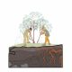
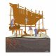
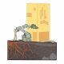
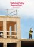
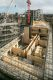

This is part of a three piece thinking series, please also see Treelogy, Part I: Learning from woodlands and Treelogy Part III: The urban forest
Results [0]
What are you looking for?
MNDHRI

 Close
Close
Close
Thinking 22 November, 2021 | 7 min read
Treelogy, Part II: The Tree and Timber

Treelogy, Part II: The Tree and Timber – vignette by dRMM
There needs to be more public debate about nature-based solutions and net-zero climate pathways. […] The desire to do something about climate change and deforestation should not blind us to asking important questions about whether proposed solutions are actually feasible, or might generate other difficult problems.
Prof Tim Forsyth
Nature-based solutions to climate change need more critical scrutiny
Nature-based solutions to climate change need more critical scrutiny
Trees are complex and adaptive systems.
They are each capable of self-regenerating, collecting and storing rainwater, varying lighting conditions throughout the seasons, preventing soil erosion, and sequestering carbon – all within an elegant form that can be adapted to accommodate structural loads and fire risk. Despite these many virtuous traits, the application of timber in construction is typically limited to sawn sections hidden behind plasterboard. As architects, we must recalibrate the way we look at trees, reassessing both the opportunities and shortfalls of processing trees for building. dRMM has long advocated for timber as a low carbon, sustainable building material. From roundwood to CLT, the studio has been committed to learning about the material’s properties, transferring knowledge between projects and even to the way we use other natural and low impact materials.

Forest of Fabrication - exhibition by dRMM
Timber is now being widely discussed as one of the potential solutions to the construction industry’s most pressing concerns – decarbonising the embodied and whole life, or upfront, carbon associated with construction.
These carbon emissions occur today, or in the immediate future, whereas operational carbon emissions associated with the energy running of buildings occur in smaller chunks over a longer timeframe. Timber products sequester carbon from the atmosphere because trees absorb carbon dioxide as they grow by photosynthesis, producing cellulose and lignin. The sequestered carbon is then locked into built structures lasting for 60+years (there are many examples of timber buildings lasting hundreds of years), extending the time that this carbon storage lasts beyond the capability of the forest system, while new trees grow in the place of any felled trees. This system of renewal relies on a sustainable balance between extraction and new growth – which means we must never extract more than the forest grows.
Forestry management usually requires some level of extraction, felling or coppicing to trees, to introduce light into the forest floor. This has been commonplace in the UK since Roman times, or even earlier, with some Roman sweet chestnut woodlands planted and managed for firewood and building materials still existing today in the English countryside – for example near Colchester, Essex. More recently, best practice standards and certifications for sustainable forestry practices in the UK and worldwide have been developed to guarantee to specifiers that wood or timber products have originated from sustainably managed forests, where the number of trees removed is carefully anticipated in the planting of more trees alongside predicted growth of the forest.
There is a limit to how much can be achieved in tree planting initiatives, for example for offsetting purposes, without an ongoing management plan for those forests, particularly with scarcity of land available for planting. This is why it is so important to maximise potential for biodiversity gain and carbon sequestration through careful, sustainable forestry management.
Typical tree utilization - drawing by Jack Cardo / AA wood Lab
One area of current debate is how and when we count timber’s sequestered carbon as part of a life-cycle assessment, given the unknown over what happens with timber products at the end of life (Module D of Life Cycle Assessments).
We do however know what the current situation of end of life for timber is. Adrian Campbell of Changebuilding reports that, currently, according to CTI data (2016) 56% of timber is generally reused at end of life, with 33% used as biomass (combustion for energy), 2% going to landfill, and 10% used in landscaping (for example wood chippings and mulch). Table 4 in the Timber Development UK (TDUK) paper on ‘Assessing Carbon Related Impacts of Timber in Construction’ gives a more specific breakdown, depending on wood product type.
We see opportunity for the end-of-life picture to be improved in the future, with more timber assets being repurposed at their highest asset value as part of a circular economy, i.e., mass timber structural panels able to be repurposed again as structural panels, rather than broken down to layers or as chippings. It is worth noting that where timber is used as biomass at end of life, this can be considered a positive in the short term, because it means we need to use less fossil fuels. But as energy systems move to being more renewably powered, we will need to refrain from combustion – that is unless carbon capture storage has become a truly viable technology.
dRMM considers sequestration as an important part of timber’s embodied and whole life carbon story, and position sequestration as a valid point of comparison when comparing timber with steel or concrete methods of construction, while we are also cognisant of the concerns by some over potential risks at end of life. We agree with TDUK that sequestration should only be counted when timber is responsibly, sustainably sourced from certified forests, to ensure that the carbon cycle is performing as anticipated.
Designing buildings to protect timber structures over their whole lives from moisture and decay is another important consideration. This means that by favouring easily demountable fixings, and with the likely advancements in deconstruction processes that will be made over the next 30-60 years as society moves towards a more circular economy, that it will become unlikely that timber buildings built today will be demolished and then incinerated at all in the long term – particularly as incineration becomes incompatible with the need for decarbonisation. Arguably, in the short term, while our grid is not fully decarbonised, any timber that is incinerated at end of life is substituting a quantity of fossil fuels that would otherwise have been combusted, so is no net increase in carbon emitted anyhow.
Given the urgency of the climate crisis we face, locking carbon into buildings now and in the short term will pay dividends long term. This outweighs the systems that involve emitting carbon upfront and seeking to find carbon storage technologies later. After all, humankind is yet to develop any carbon storage that works better than the tree. The UK’s linear approach to whole life carbon does not adequately tackle the important element of time and urgency that is tied to the climate crisis. In Europe, more dynamic methods of life cycle assessments are being adopted to address these unavoidable parameters.

Coppicing: low-tech sustainable extraction – vignette by dRMM

Traditional timber processing methods – vignette by dRMM

DfMA modern methods – vignette by dRMM
As there is a limit to sustainable extraction rates from forests, and a likely increased future dependence on our forests to provide us with building materials, we cannot be putting more timber in buildings to seek exaggerated sequestration goals on a project-by-project basis.
We instead need to be making more buildings out of timber, with each one using timber as efficiently as possible.
Equally, we need to be very efficient in our use of timber products to maximise sequestration opportunities. This starts with how we dissect the tree. Often, a very small percentage of a tree will make it into timber structures, even once it is earmarked for construction. Once sawn to lengths, just 35% of a tree’s original biomass remains usable for construction materials, with the rest moving to shorter lived production streams such as mulch, wood fibre insulation and paper. Working with timber ‘in-the-round’ helps to reduce waste and capitalise on the inherent strength of the plant’s stem. This is how timber was used on dRMM’s proposal for the Kingsdale School auditorium.
The design team worked with Gordon Cowley from Cowley Structural Timberworks to develop a frame of scaled-up pencils, each connected by multidirectional nodes to build an asymmetrical space frame. This system helped the team avoid wastage in the sawmill. Elsewhere, technological inertia or aesthetic stigma around the use of roundwood, coppice or crown timbers has come into question when the energy and wastage associated with the 2×4 is in the spotlight. Tools are evolving to make use of timber’s inherent form. Kingsdale’s high-tech system borrows from an age preceding manufacture, when round and found timbers were used to make everything from boats to bridges.
The UK imports most of the timber it uses, we are second only to China on timber imports by mass, with most of this coming from Europe. Engineered timber supply chains have matured in Sweden, Austria, and Finland, supplying most of the Cross Laminated Timber (CLT) and Glue Laminated Timber (GluLam) for UK projects. Foresight within land-use policies and industrial promotion strategies in these countries have meant generations of foresters and sawmills produce a steady supply of timber, while in the UK the same foresight has unfortunately not been in place. Many of these forests yield quality material, well suited for use in Long Life Harvested Wood Products, from historic craft-based supply chains to high tech workflows in compliance with international standards and regulations.
The mass timber products now on offer are ideal for Modern Methods of Construction (MMC) and are seen by some as the materials standing to benefit the industry from a shift to off-site construction, with fewer and lighter deliveries than prefabricated steel or concrete, combined with safer, healthier construction sites. Design for Manufacture and Assembly (DfMA) strategies have been explored in several dRMM projects, advocating for faster and safer construction for those working on and off the construction site. DfMA also lends well to circular economy approaches, when combined with design for deconstruction and disassembly (or DFMA+D) and reuse together with material passports and asset tags developed through BIM.

Kingsdale school auditorium (2006) - photos by Alex de Rijke
In 2006, dRMM looked to tap into the potential of offsite manufacture of CLT panels with the Naked House.
The project was fundamentally of the age of digital information exchange, using computer numerical control (CNC) tool paths to simultaneously cut openings and furnishings as the material removed for window openings was directly utilised for shelving and as the skylight left a panel the right size for a dining table. Naked House embodied a fruitful method of designing, which responds directly to the capabilities of the tools and expertise involved in its construction.
Another, later project, the Endless Stair (2013), took a different route to exploring the use of engineered timber systems. It developed a unique mitred finger joint with the Italian manufacturer Imola Legno to build a versatile dry construction system that would be endlessly reconfigurable. It was, accordingly, first adapted for the London Design Festival and sited outside Tate Modern, and then revised for the FuoriSalone 2014 exhibition in Milan, lastly being reimagined in its ‘third life’ (so far) as a staircase in a German barn conversion.

Naked House (2006) by dRMM - photos by Alex de Rijke
Despite significant evolutions within efficient machine processing of timber, centuries of investment and lobbying have established steel and concrete as the default structural material for architects and structural engineers.
These industries have set ambitious plans to decarbonise. But the raw material supply needed for these products is finite, and their extraction and manufacture processes are highly energy intensive – so there is only so much that can be done in decarbonising them with today’s technologies.
Low-carbon concrete often relies on the use of waste products from steel manufacture (Ground Granulated Blast-furnace Slag), which is itself a finite and dwindling resource globally. Steel is, with current technologies, limited to a 50% emissions reduction through furnace electrification. The UK FIRES Minus 45 report outlines that by 2030, the UK needs a ‘45% cut in blast furnace produced steel, cement and other bulk chemical productions’. Whereas sustainably sourced, certified timber can be considered completely renewable.
It is important that the industry does not become blinkered and only make decisions around material specification that are dependent on carbon cycles. Specification choices must look more widely at ecological impacts and a wider life cycle assessment of the materials used. Built environment professionals already understand the need to find ecologically driven solutions, and ambitious net-zero targets are being set by organisations across the built environment. But design heuristics have still left many architects specifying materials and systems in direct opposition to established best practice for decarbonisation.
Fortunately, the timber industry has adapted to the demands born out of the age of steel and concrete. Engineered timber products are increasingly seen as viable, direct substitutions for steel profiles and concrete walls or frames, with structural grading systems and spanning tables enabling designers to employ products off the shelf. When using mass timber as a self-finishing material, layers of materials typically needed are erased – like dry-lining and paints, which over the whole life of a building can create huge embodied carbon savings and maintenance costs.


The hidden carbon cost of construction - graphic by Finbar Charleson / ACAN
Trees are relatively slow growing, and strong in their direction of growth, making them well suited for structural applications.
Yet much of the timber that does make it into construction in the UK is through heavily processed sheet materials, made with glues and resins that often result in high embodied carbon impacts per kilogram of material, and have reduced re-purposability at the end of their life unless made using natural resins and glues.
More rapidly renewable materials and timber alternatives may be better suited to systems that have shorter lifespans and increased replaceability in a building’s life. What this could look like is replacing wooden flooring with bamboo, rubber, or cork, while always being mindful of end-of-life reusability and separation when applying any lamination sealants or resins. Finding ways to laminate wood with natural or no resins is an area of emerging research, with the potential for Nail Laminated Timber (NLT) and Dowel Laminated Timber (DLT) to improve the end-of-life potential compared to CLTs relying on glues.
Best practice would also involve optimising the efficient use of timber within structures – recognising opportunities when it may be beneficial to use it within hybrid systems alongside other natural materials like stone. Shorter term decarbonisation ambitions will certainly see the use of timber in conjunction with lower carbon concrete and steel, neither of which should be dismissed outright as viable building materials long term with careful consideration of their efficient use, specification, and manufacture. On a kilogram-to-kilogram comparison, timber is lower embodied carbon than steel and concrete, even before you take sequestration into account.
However, mass timber structures by weight can be chunkier and more massive in kg/m2 than efficient concrete or steel structure alternatives, which sometimes means that mass timber alone is not the most efficient resource use, or lowest carbon system, which ultimately should be the aim. This can be avoided by ensuring structural pans are designed to work with timber structures without additional materials, however this is not always possible. All materials used in construction should be regarded as precious resources, and hybrid construction systems give the opportunity to maximise the properties of each material used. The challenge with hybrid systems is ensuring coordination of trades from different construction backgrounds on site to deliver singular pieces of architecture.



ACAN campaign for the regulation of embodied carbon
Literacy around the material properties of timber may put into question the buildings we design.
Edinburgh Napier University’s CSIC has made great strides in grading timber grown in the UK to ensure its elements are structurally safe. Despite this, much of the timber grown in the UK does not fit into the typical category of C16 or C24 structural timber. Logs and boards are usually only visually graded, because small disparate suppliers are unable to guarantee consistency and lack the time or resources to test their timber. This means the specification of deep beams and wide columns precludes the use of many local timber supplies. Upscaling the work of the CSIC is an important step for industry in the UK. dRMM were able to see first-hand the work being done during the studio’s visit to Glasgow for COP26 in November 2021, with hope to learn more and potentially integrate this innovative research into future projects.
Shorter spanning framed systems will, in many instances, become more inclusive, particularly when they respond to the specific mechanical properties of timber species available. The form of timber buildings may in time take different shapes as a result, with long spanning shell and spatial structures testament to the efficiencies attainable when carefully considering the timber in hand. In using timber, a design team can capitalise on a multiplier effect, whereby an overall less dense and lighter superstructure will reduce the need for foundations and the emissions associated with concrete – a key aspect of the hybrid systems adopted by dRMM in our residential project, Trafalgar Place (2015).


CLT structure under construction at Trafalgar Place (2015) by dRMM
The potential shortfalls of forests for timber have been discussed in part one of this trilogy, but even once a forest is producing a sustainable yield and delivering on biodiversity, timber usually ends up in other places than buildings.
Timber building materials are considered Long Life Harvested Wood Products, capable of extending the timeframe of carbon storage in giving a second life to the tree. This use of wood is surely preferable to many other options such as biomass, paper, toilet paper, cardboard, wood chips; all of which should be questioned in the context of virgin timber extraction and would benefit from a shift towards recycled content and other rapidly renewable natural materials.
In 2020, the England Tree Strategy commented on the UK Government’s plans for the next 50 years of tree planting in England. In December, dRMM Architects Climate Action Network (ACAN) members and representatives of DEFRA met to discuss the ways that new policies might support timber construction. The department has set an ambitious target to plant 30,000 hectares by 2025 and were keen to understand how more timber construction might emerge as a result. The meeting signified the importance of this nascent industry and hopefully signifies a closer working relationship between industry and policymakers moving forwards. As the saying goes, while the best time to plant a tree was 20 years ago, the next best time is today – there should be optimism around the potential of a British forestry industry in years to come.
The architectural profession and its wider network needs to better tap into the tools available to monitor the whole life carbon of their designs, and advocate to bring forth targets and regulations for new buildings and retrofits, such as the industry-led Part Z initiative. Overall, as we work to meet a default model of decarbonisation, architects must rely on designing with timber to become not only more widespread, but smarter.

Treelogy is three-part essay companion to dRMM’s Treeptych drawing, on display at the Royal Academy 2021 Summer Show. Treelogy zooms into the life of trees and timber over three parts – from their role in nature’s diverse ecosystem, to their sustainable use in construction, and finally their relationship with humanity’s communities and urban realm. The three essays have been authored by dRMM’s Sustainability & Regenerative Design Manager Kat Scott and Architectural Assistant Finbar Charleson, with editorial support from independent design writer Ann Dingli. Treeptych and Treelogy have been conceived and produced as part of dRMM’s ongoing climate action, specifically supporting our Architects Declare knowledge sharing commitment, as well as the studio’s longstanding timber research and application within the construction industry.